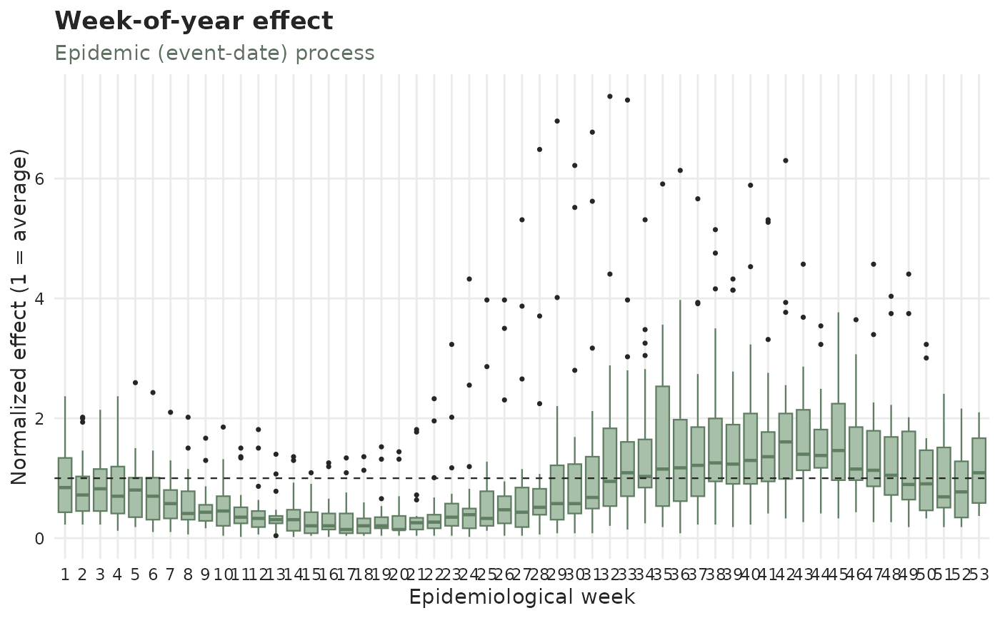
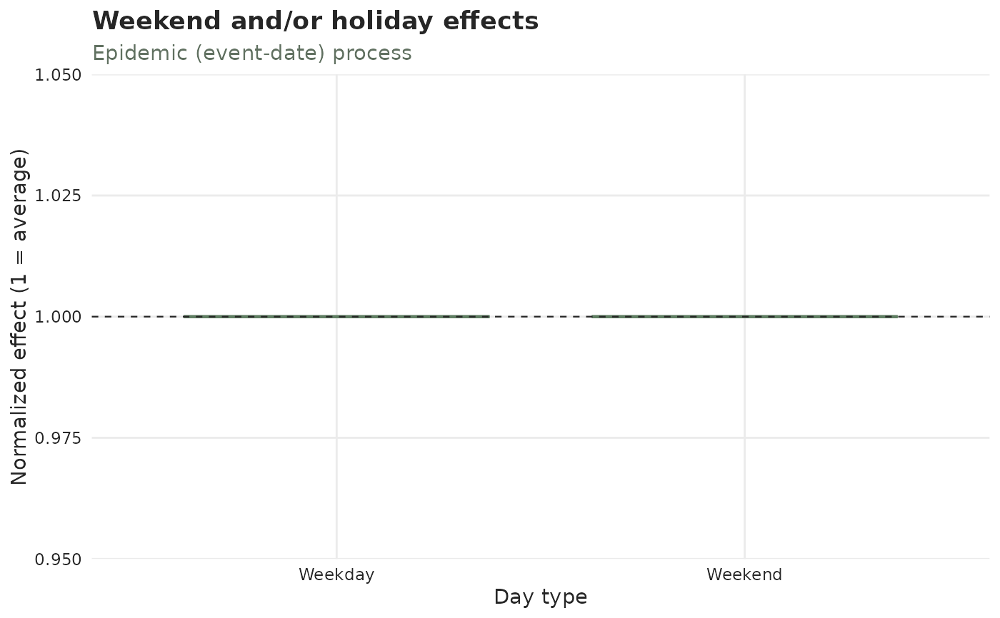
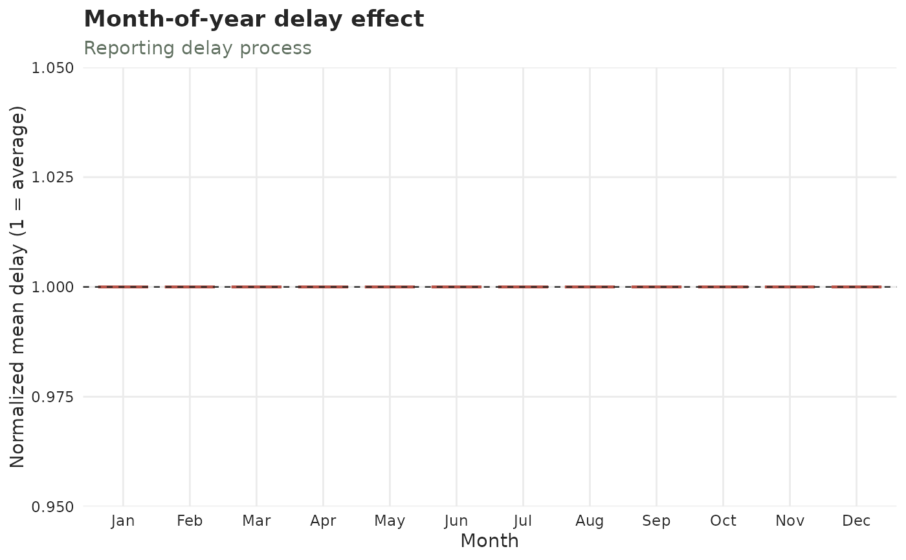
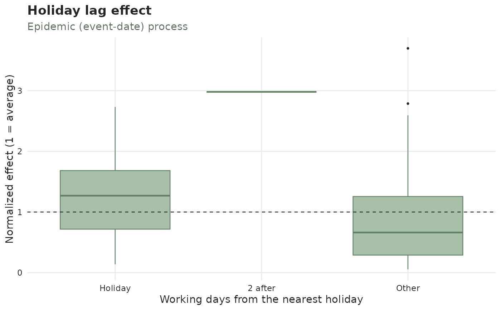

Calendar effects on the case counts or on the reporting delay
Source:R/plot_effects.R
calendar_effect_plots.Rd![[Stable]](figures/lifecycle-stable.svg)
One panel of autoplot(), drawn on its own. Each function shows the same
boxplots the corresponding autoplot() panel does, for one calendar grouping:
plot_day_of_week_effects()— by day of week (daily data only).plot_week_of_year_effects()— by epidemiological week.plot_month_of_year_effects()— by month (monthly data only).plot_holiday_effects()— by day type (Weekday/Weekend/Holiday, following the attachedtemporal_effects()spec).plot_weekend_effects()— the same panel, on an object that may not carry a spec yet: it attachestemporal_effects(weekend = TRUE)when there is no weekend effect already, so the weekend boxes appear without a separateadd_temporal_effects()call. The spec goes on a copy — your object is not modified — and a calendar already attached still contributes itsHolidaybox. Daily data only, since a weekend is a property of the day.plot_holiday_lag_effects()— by position relative to the nearest holiday ("1 before","Holiday","1 after", ..., plus"Other").
type picks which process to describe: "epidemic" (green — how the cases
vary by calendar group), "report" (red — how the reporting does), or
"revision" (ochre — how resolved cases arrive on revision dates).
The three day-type / holiday-lag functions have no measure argument: they
are always normalized. Their categories are not equal-sized parts of a
calendar block — the weekend is two days in seven — so a percentage share
would mostly restate the calendar rather than the data ("29% of the cases at
the weekend" is average, not low). The day-of-week, week-of-year and
month-of-year functions keep both measures.
Use these when you want one effect, in its own figure, at its own size; use
autoplot() when you want the diagnostic grid in one call. Everything else is
the same: autoplot(x, panels = "calendar_weekday") and
plot_day_of_week_effects(x) return the identical plot.
Usage
plot_day_of_week_effects(
x,
type = c("epidemic", "report", "revision"),
measure = c("percent", "normalized"),
...
)
plot_week_of_year_effects(
x,
type = c("epidemic", "report", "revision"),
measure = c("percent", "normalized"),
...
)
plot_month_of_year_effects(
x,
type = c("epidemic", "report", "revision"),
measure = c("percent", "normalized"),
...
)
plot_holiday_effects(x, type = c("epidemic", "report", "revision"), ...)
plot_weekend_effects(
x,
type = c("epidemic", "report", "revision"),
weekend_days = c("Sat", "Sun"),
...
)
plot_holiday_lag_effects(x, type = c("epidemic", "report", "revision"), ...)Arguments
- x
A
tbl_now()object.- type
"epidemic"(default) for the case-count effect,"report"for the reporting-delay one, or"revision"for revision-date arrivals.- measure
"percent"(default) for the share of cases in each group — "10% of cases in week 1 versus 3% in week 2" — with the IQR around it, or"normalized"for the value divided by its overall mean (1= average). Seeautoplot.tbl_now()for the blocks the percentages are taken over. The day-type and holiday-lag functions do not take it; they are always normalized.- ...
Further arguments passed to
autoplot.tbl_now(), e.g.by_strata,strata,plotlyorpalette.- weekend_days
Character vector naming the weekend days (default
c("Sat", "Sun")), as inis_weekday(). Used only whenplot_weekend_effects()has to attach the effect itself; an object that already carries a weekend effect keeps the definition it was given.
See also
autoplot.tbl_now(), plot_cycles(), plot_delay_distribution(),
plot_observed_cases(); temporal_effects() and add_temporal_effects()
for the specification the day-type and holiday-lag panels describe.
Examples
data(denguedat)
# First few years only, to keep the example quick; the full data works the same.
dengue_now <- tbl_now(denguedat[1:2500, ], onset_week, report_week, verbose = FALSE)
# How the cases vary by epidemiological week
plot_week_of_year_effects(dengue_now)

# The weekend on its own, on daily data, with no spec to attach first
days <- seq(as.Date("2021-01-01"), as.Date("2021-06-30"), by = "day")
daily_now <- tbl_now(
data.frame(event_date = days, report_date = days + 1),
event_date, report_date, verbose = FALSE
)
plot_weekend_effects(daily_now)

# By month, on monthly-unit data. `type` picks the process and `measure`
# picks the scale; both compose, and work the same way on every calendar
# function here. (The day-type and holiday-lag panels are always
# normalized, so they take `type` but not `measure`.)
monthly_now <- tbl_now(
data.frame(
event_date = seq(as.Date("2018-01-01"), as.Date("2021-12-01"), by = "month"),
report_date = seq(as.Date("2018-02-01"), as.Date("2022-01-01"), by = "month")
),
event_date, report_date,
event_units = "months", report_units = "months", verbose = FALSE
)
plot_month_of_year_effects(monthly_now, type = "report", measure = "normalized")

if (requireNamespace("almanac", quietly = TRUE)){
## By day type (weekday / weekend / holiday), once a holiday calendar is attached
holiday_now <- dengue_now |>
add_temporal_effects(temporal_effects(weekend = TRUE, holidays = almanac::cal_us_federal()))
plot_holiday_effects(holiday_now)
# By position relative to the nearest holiday
holiday_lag_now <- dengue_now |>
add_temporal_effects(temporal_effects(holidays = almanac::cal_us_federal(), holiday_lags = 2))
plot_holiday_lag_effects(holiday_lag_now)
}
